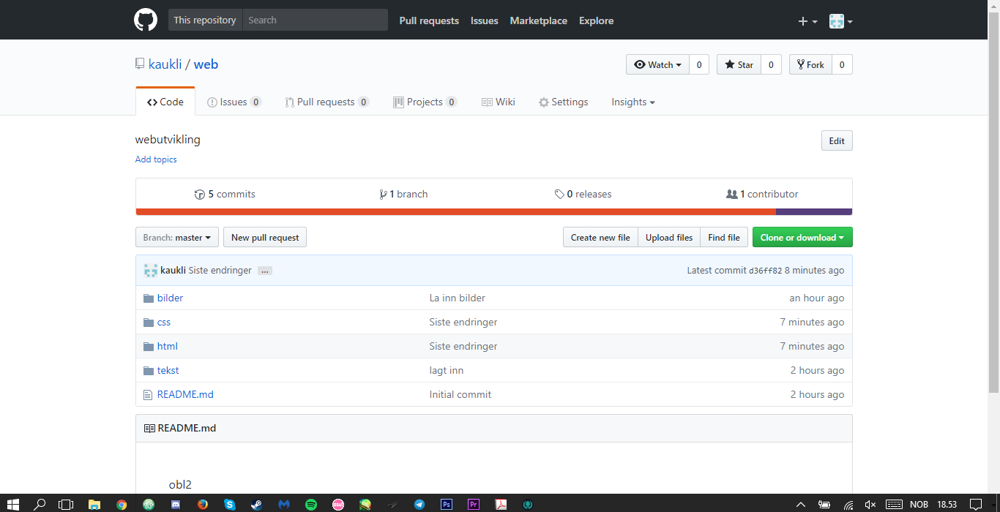

GitHub
Git er et versjonskontrollsystem, ettersom utviklere ofte forandrer koden på ting de lager. Det fører ofte til nye versjoner til og etter første offisielle (non-beta) utgivelsen. Slik kan man se igjennom nye endringer, laste ned nyeste versjonen av programmet, gjøre endringer og laste opp en nyere versjon igjen. Og sånn kan alle utviklerne se endringene, laste dem ned og bidra. Selvsagt finnes det flere versjonskontrollystemer, men Git er den preferable versjonen.
Git er kommando-linje-verktøy, og GitHub er samlestedet for Git, et oppbevaringsted der utviklere lagrer prosjektene og samler seg med likesinnede folk.
Oppbevaringstedet (Ofte forkortet "repo" av engelske ordet repository) er et sted der alle filer for et spesifikt prosjekt er oppbevart. Hvert prosjekt har sin egen rep, og man har tilgang til dette med en unik URL.
GitHub er ikke det eneste stedet som støtter Git, heller ikke det eneste oppbevaringsområdet for sånt. I bildet under kan du se at jeg har benyttet meg av GitKraken. Den tillater meg å endre filene nærmest live og gir meg en god trygghet om at filene er trygge. Siden jeg har logget meg inn med brukeren min fra GitHub, ser jeg dermed alle endringer der også.
En versjon av Git, altså GritKraken
Gitkraken i endring
GitHub i en repository om denne nettsiden

GitHub Commit, der jeg kan se siste endringer